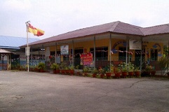
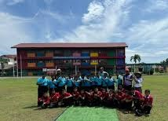
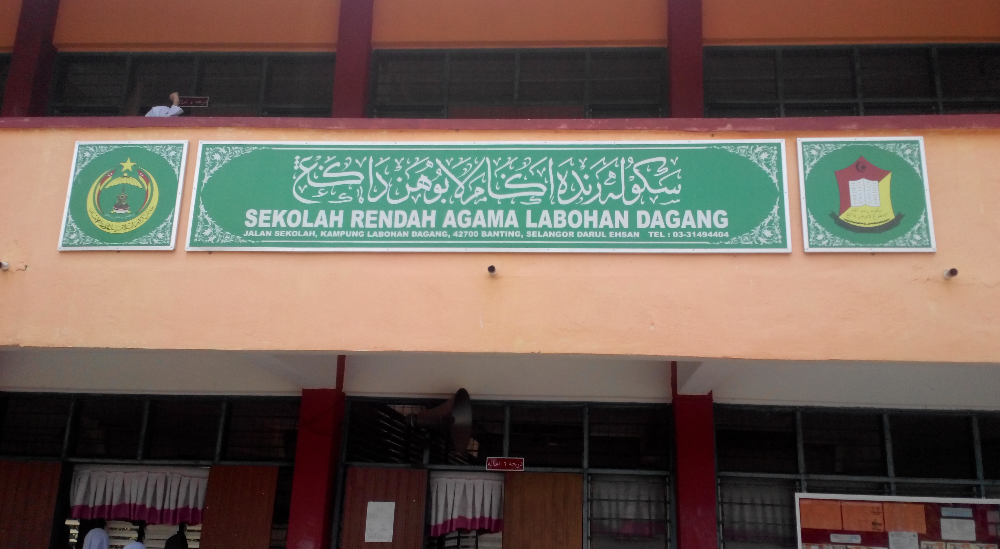
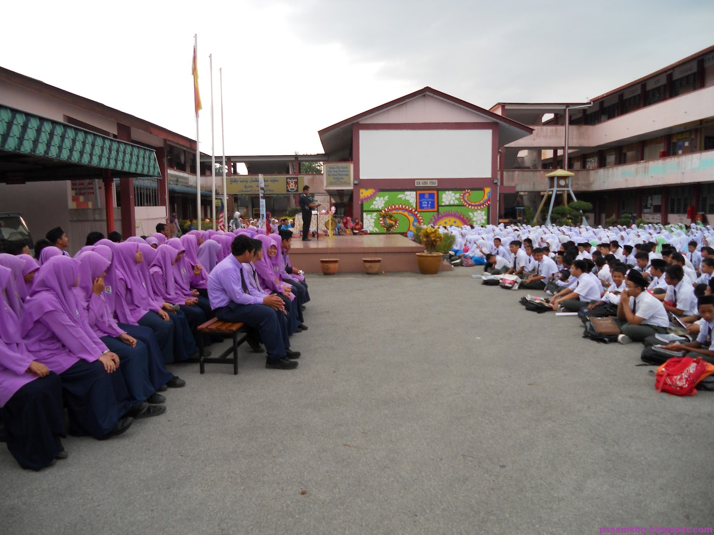
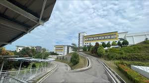

| Education Level | Institution | Years Attended | Image |
|---|---|---|---|
| Kindergarten | Tadika Kemas | 2008-2010 |  |
| Primary School | Sekolah Kebangsaan Labohan Dagang | 2011-2016 |  |
| Sekolah Rendah Agama Labohan Dagang | 2011-2016 |  | |
| Secondary School | Sekolah Menengah Kebangsaan Bukit Changgang | 2017-2021 |  |
| Diploma | Universiti Teknologi MARA (UiTM) Rembau Campus | 2022-2025 |  |
Throughout my academic journey, I have actively participated in various extracurricular activities
that reflect my diverse interests and passions. During primary and secondary school, I nurtured my
love for art by joining the art club, which allowed me to explore my creativity and express myself
through different mediums.
On the sports field, I thrived as a team player, participating in hockey,
netball, and excelling in high jump events. In my diploma years, I embraced new challenges by joining
the Tempur Tanpa Senjata co-curriculum program, where I learned invaluable survival skills and taekwondo.
This experience not only strengthened my resilience but also deepened my appreciation for teamwork and discipline.